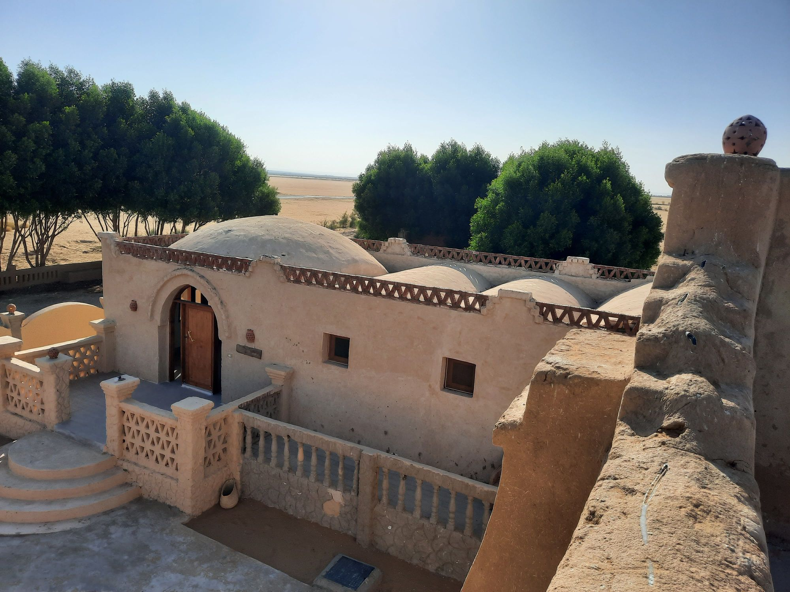

Escribeal desierto
Reservas, dudas o una ruta que tienes en mente. Nuestro equipo te responde personalmente.
Recepción24 / 7
Reservas08:00 – 20:00
EmergenciasSiempre
Hora en el campamento--:--
Atardecer hoy--:--
Para reservar,habla con nosotros
Escríbenos por WhatsApp o email con tus fechas y el número de viajeros. Te confirmamos disponibilidad y precio.
WhatsApp+34 696 972 569
UbicaciónAbu Monkar, Desierto Líbico, Egipto · 26°29'29.7"N 27°40'24.7"E

Cómo llegar
Oasis de Abu Monkar
Entre Farafra y Dajla, en el borde del Gran Mar de Arena. Te recogemos en El Cairo o en Bahariya.